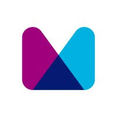
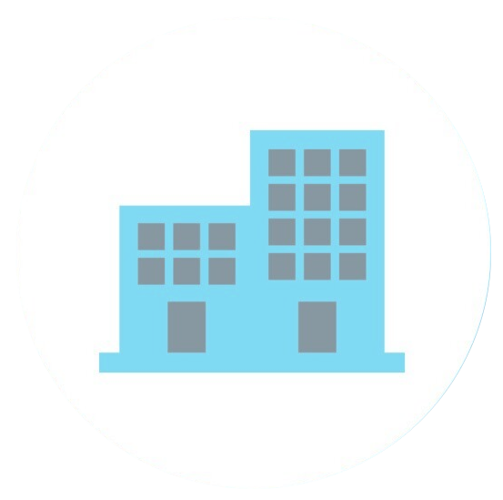
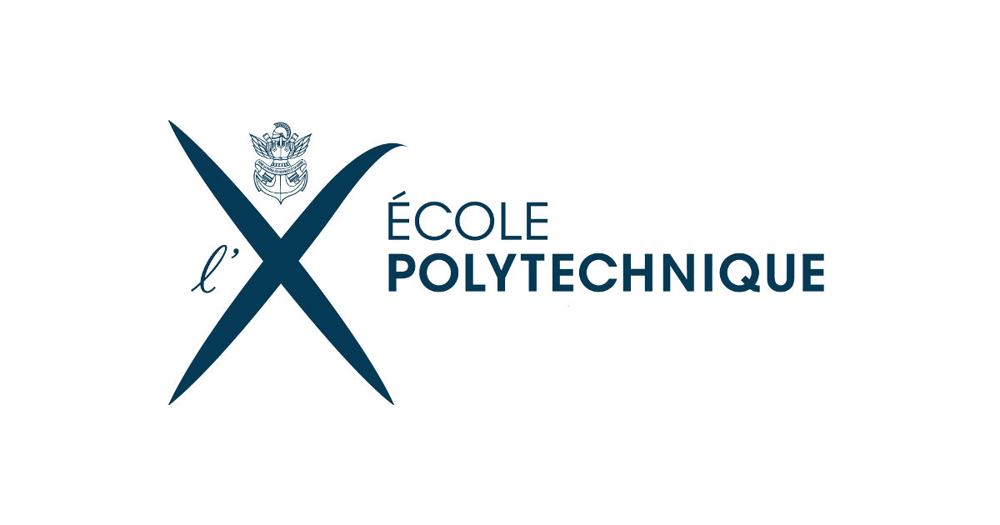
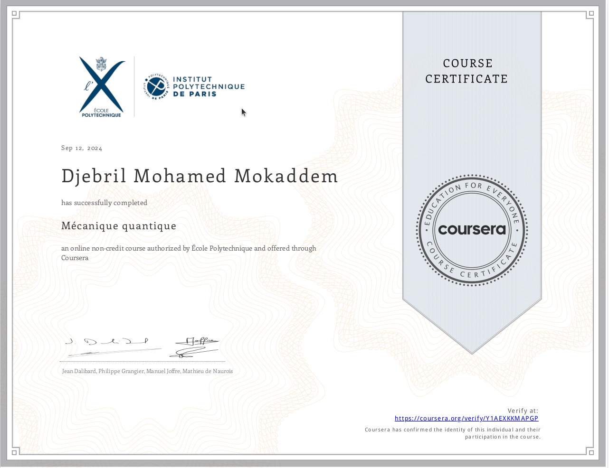
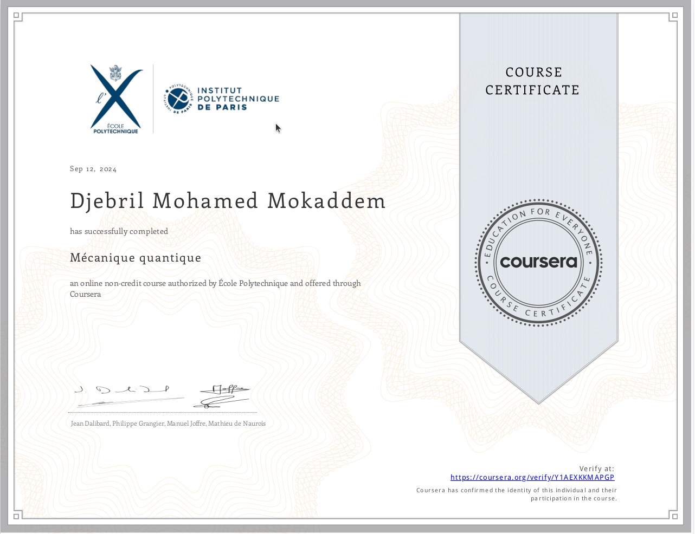

Mohamed Mokaddem
Science Teacher & UX/UI Designer
Email: mohamed(_dot_)mokaddem(_at_)proton(_dot_)mePhone: 05(five)70(six)1677
Professional Experience

Oct. 2021 to now - Algiers, Algeria
Science Teacher
Teaching Science to High School students.
Science Teacher
Teaching Science to High School students.

Apr. 2021 to May 2021 - Ottawa, Canada
MThree
Started working as a C++ developer within the Algorithm trading team at Morgan Stanley Montreal before leaving Canada.
MThree
Started working as a C++ developer within the Algorithm trading team at Morgan Stanley Montreal before leaving Canada.

Jan. 2020 to Apr. 2021 - Ottawa, Canada
IT Consultant
Various remote freelance contracts.
IT Consultant
Various remote freelance contracts.
Jan. 2019 to Sep. 2019 - Ottawa, Canada
Co-founder
Pickamove was a SaaS created in order to reduce commute time between work and home for people.
The workflow was as follows: The current tenant advertises the place; the prospective tenant applies for a visit promising a referral fee (held in escrow) if it works out. The advantages would be higher flexibility with leaving notice periods, and, since the place gets advertised by the current tenant, a more fluid rental market in low vacancy situations.
The app backend was written in C# under ASP.net Core framework, and the frontend in HTML5/CSS and vanilla javascript.
Pickamove founding team has graduated from YC startup school 2019, a 10 week-long program that connects entrepreneurs worlwidely to brainstorm their ideas.
Co-founder
Pickamove was a SaaS created in order to reduce commute time between work and home for people.
The workflow was as follows: The current tenant advertises the place; the prospective tenant applies for a visit promising a referral fee (held in escrow) if it works out. The advantages would be higher flexibility with leaving notice periods, and, since the place gets advertised by the current tenant, a more fluid rental market in low vacancy situations.
The app backend was written in C# under ASP.net Core framework, and the frontend in HTML5/CSS and vanilla javascript.
Pickamove founding team has graduated from YC startup school 2019, a 10 week-long program that connects entrepreneurs worlwidely to brainstorm their ideas.
Oct. 2017 to Feb. 2018 - Strasbourg, France
Software Engineer
C++ Development and Data Visualization using Qlik Software.
Software Engineer
C++ Development and Data Visualization using Qlik Software.
Jan. 2017 to Sep. 2017 - Marseille, France
IT Consultant
I was doing research from home on how to improve the commuting experience between work and home places using simulations. These simulations were multi-agent records programmed in Python and C++ with PyBind11 library serving as an operability interface between the 2 languages.
I also did a lot of reading on the philosophical question of human free will all under the scientific framework of reinforcement learning and planning in the ambitious but unrealistic attempt to model the agents as naturally as possible.
IT Consultant
I was doing research from home on how to improve the commuting experience between work and home places using simulations. These simulations were multi-agent records programmed in Python and C++ with PyBind11 library serving as an operability interface between the 2 languages.
I also did a lot of reading on the philosophical question of human free will all under the scientific framework of reinforcement learning and planning in the ambitious but unrealistic attempt to model the agents as naturally as possible.
Sep. 2015 to Oct. 2016 - Marseille, France
Computer Vision and Machine Learning R&D Engineer
I worked on a Situational awareness system for the automotive industry. The prototype included several computer vision and machine learning algorithms for object/pedestrian detection and tracking tasks. My workflow was basically training and testing the program on workstation equipped with NVIDIA GPUs, then deploy it on embeddable NVIDIA Jetson TK1/TX1 platforms. The prototype was performing realtime processing of 720p images on these platforms (reaching sometimes 20 fps).
Software stack: NVIDIA CuDNN (library for Neural Nets), OpenCV (Computer vision library), C/C++
Computer Vision and Machine Learning R&D Engineer
I worked on a Situational awareness system for the automotive industry. The prototype included several computer vision and machine learning algorithms for object/pedestrian detection and tracking tasks. My workflow was basically training and testing the program on workstation equipped with NVIDIA GPUs, then deploy it on embeddable NVIDIA Jetson TK1/TX1 platforms. The prototype was performing realtime processing of 720p images on these platforms (reaching sometimes 20 fps).
Software stack: NVIDIA CuDNN (library for Neural Nets), OpenCV (Computer vision library), C/C++
Feb. 2015 to Jul.2015 - Aix-en-Provence, France
Software Engineering Intern
My mission was to implement a real time prototype achieving various augmented reality tasks based on the KinectFusion Algorithm (Izadi et al.) like 3D Registration and to work later on adding the localization part to make it true SLAM (Simultaneous Localizer and Mapper).
Software and Hardware used: C/C++, GPGPU/GPU, OpenCL, OpenCV, Microsoft Kinect, Intel Realsense.
Software Engineering Intern
My mission was to implement a real time prototype achieving various augmented reality tasks based on the KinectFusion Algorithm (Izadi et al.) like 3D Registration and to work later on adding the localization part to make it true SLAM (Simultaneous Localizer and Mapper).
Software and Hardware used: C/C++, GPGPU/GPU, OpenCL, OpenCV, Microsoft Kinect, Intel Realsense.
March. 2014 to Sep.2014 - Bidart, France
Software Engineering Intern
Aerodrones was a software company selling a product called SURVAIR to coastline surveillance contractors helping them do the aerial image acquisition. I was working in collaboration with the team as an intern to implement an automatic image registration component based on Google maps. It was used to communicate automatically the GPS coordinates of potential ground anomalies to alert public authorities.
Software stack: C/C++, GPGPU/GPU, CUDA, Java
Software Engineering Intern
Aerodrones was a software company selling a product called SURVAIR to coastline surveillance contractors helping them do the aerial image acquisition. I was working in collaboration with the team as an intern to implement an automatic image registration component based on Google maps. It was used to communicate automatically the GPS coordinates of potential ground anomalies to alert public authorities.
Software stack: C/C++, GPGPU/GPU, CUDA, Java
Jul. 2012 to Jul.2012 - Rosheim, France
Intern
Automatic Inspection of electronic cards by vision systems.
Intern
Automatic Inspection of electronic cards by vision systems.
College Education
Sep. 2012 to Sep. 2014 - Toulouse, France
Master in Engineering
- Signal processing (Spectral analysis, Random & deterministic signals, digitalization, etc…)
- Video and image processing (Classification algorithms, compression, filtering, etc…)
- Telecommunications (Information theory, Network architectures, etc…)
- Maths: Estimation, Optimization techniques (such as gradient descent), Probabilities, Statistics.
- Machine Learning (Support vector machines, Boosting Ensembles, Neural nets)
- Programming languages: Matlab, C, C++
- Implementated from scratch in Matlab the research paper “Blind separation methods based on correlation for sparse possibly-correlated images." by Yannick Deville.
- Wrote in C++ within a team of 4 colleagues a Non-graphical Image library managing app.
Master in Engineering
- Signal processing (Spectral analysis, Random & deterministic signals, digitalization, etc…)
- Video and image processing (Classification algorithms, compression, filtering, etc…)
- Telecommunications (Information theory, Network architectures, etc…)
- Maths: Estimation, Optimization techniques (such as gradient descent), Probabilities, Statistics.
- Machine Learning (Support vector machines, Boosting Ensembles, Neural nets)
- Programming languages: Matlab, C, C++
- Implementated from scratch in Matlab the research paper “Blind separation methods based on correlation for sparse possibly-correlated images." by Yannick Deville.
- Wrote in C++ within a team of 4 colleagues a Non-graphical Image library managing app.
Sep. 2009 to Jun. 2012 - Strasbourg, France
Bachelor in physics
Fundamental physics, Mathematics, Electronics, Control engineering, programming (C,MatLab).
Bachelor in physics
Fundamental physics, Mathematics, Electronics, Control engineering, programming (C,MatLab).
Certificates

September 2024
Quantum mechanics
Wave functions, Schrodinger equation, Uncertainty principle, probabilities, fourier transform

Quantum mechanics
Wave functions, Schrodinger equation, Uncertainty principle, probabilities, fourier transform
